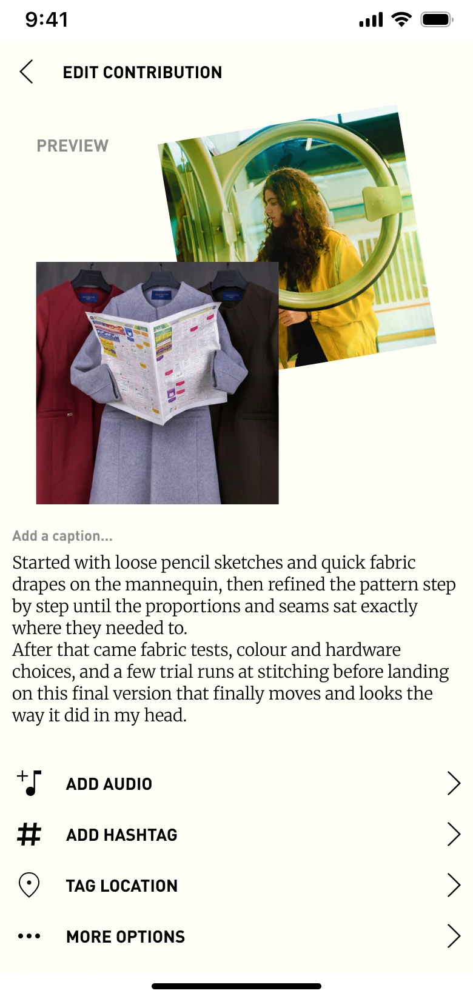
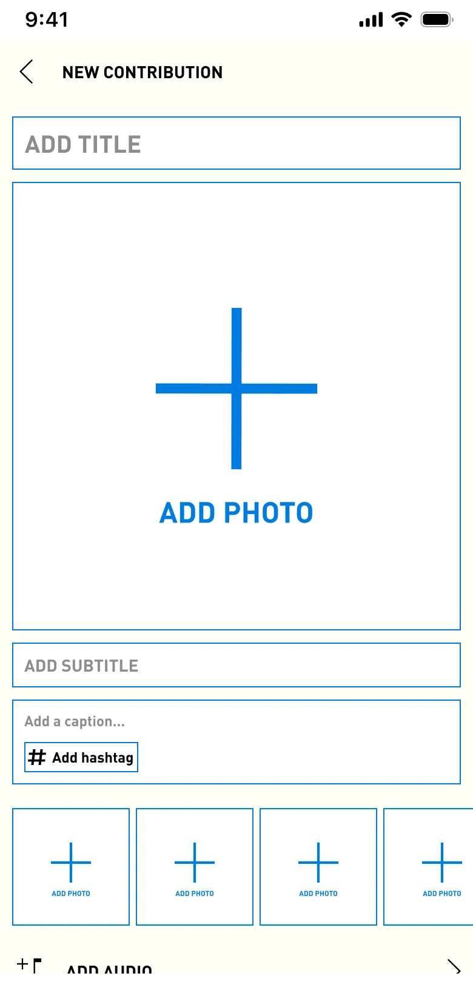
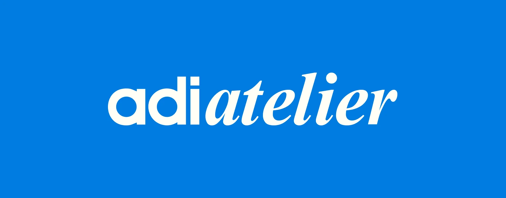
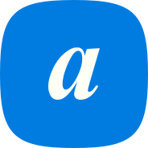
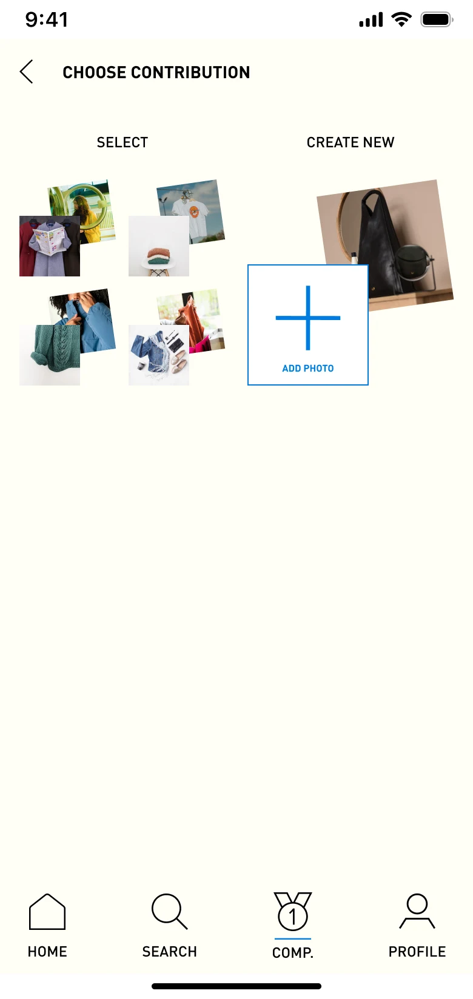
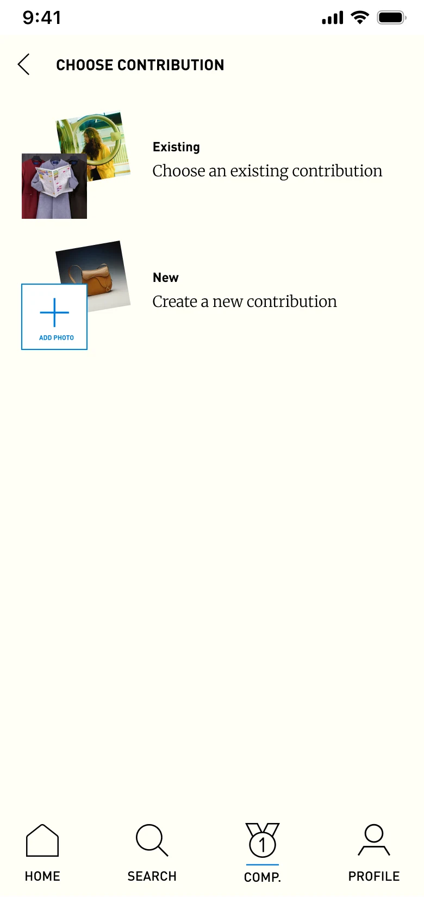
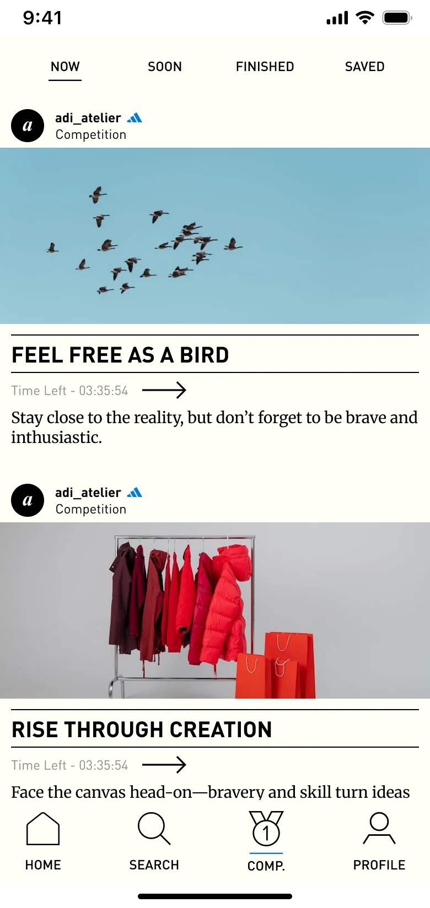
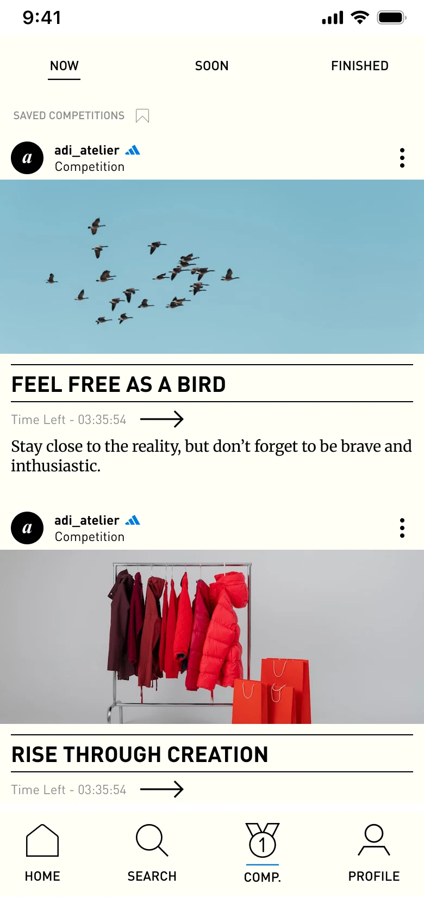

Contribution details
The contribution screen now has a title, a subtitle, a caption and an Add hashtag button.


A fashion design app where designers share their work and enter competitions backed by Adidas.
An independent concept, not affiliated with Adidas
Adi Atelier is a mobile app concept for fashion designers. Designers share their work as contributions and enter design competitions backed by Adidas.
The concept, the branding and the first screens were already made when I joined the group.
I joined for the second half of the project. We tested the first screens with users, then updated them.
The updated screens were not tested again. Most of the project went into development, as the group built the app.
We tested the original screens with four task scenarios, in person on campus.
Creating, adding audio, posting and deleting were mostly clear. The preview step was not: testers did not know they had to select a picture to change it.
Saving was clear. Finding the saved competition again was not: one tester went to the competition page, not the profile.
Finding a competition, viewing contributions, voting, opening a profile and following were clear. The notification setting was a little hidden.
Testers confused the folder with the gallery.
The brand was made before I joined. I worked within it.


Blue
#007CE0Orange
#FF9900Black
#000000Butter white
#FFFFF6DIN
Always in capitals.
Merriweather
Started with loose pencil sketches
The text people write in the app.
We updated the screens from the test notes. The updated screens were not tested again.
The contribution screen now has a title, a subtitle, a caption and an Add hashtag button.


Testers confused the folder with the gallery. The two options are now labelled Existing and New, each with a short line.


One tester looked for saved competitions on the competition page. It now has a Saved competitions row under the tabs.


After the redesign, the group built the app locally. It was not released.
Vue 3 with Vite, Vue Router, Pinia, Axios and SCSS. The app is made for phone screens.
Node.js with Express, PostgreSQL on Neon, and Cloudinary for images.